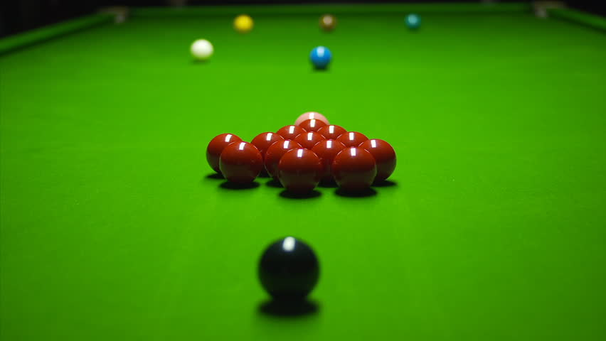

About Myself
I am a graduate from Punjabi university Patiala with computer, psychology and English literature as subjects. I have developed excellent analytical and leadership skills through my degree. As well as key communication skills through various lectures and debates that I used to take part in the university. My part-time roles and volunteer work have also provided me with a range of workplace skills such as relationship building, communication and team work.
Personal:
- A strong work ethic and desire to succeed.
- Smart presentable appearance.
- Possess a polite and helpful mannaer
- Confident communication skills
- Willing to learn
- positive attitude
- condident and articulate
- Persuasive and having good influencing skills
Hobbies and Interest:
Snooker the game that i enjoy and paly the most
- Football
- Reading books
- Music